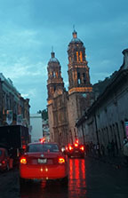
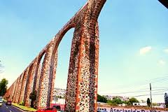
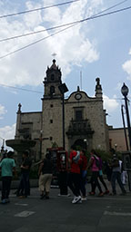

Pedro Correa's Travels
This past summer I had the opportunity to travel to Mexico. I was very excited and was able to site see and be the usual annoying tourist.
In my time there I visited a few of the many large cities in the country.
- Zacatecas, Zacatecas, Mexico
- Known for their silver export.
- Santiago de Queretaro, Queretaro, Mexico
- Knowm for its 1200 meter long aqueduct.
- Guadalajara, Jalisco, Mexico
- Which I will know them for their food!
Here a few pictures from my travels there.
Zacatecas
I spent about four days in this city, site seeing and eating(most importantly). The city is known for its major silver export which I had the opportunity to see the mine. La Mina del Eden, which is beautiful. Located in the northern part of the city. I also had the chance to visit the cathedral in the downtown. The Cathedral of Our Lady of Assumption was beautiful, it was a shame that a phone cannot capture its beauty to its entirety. I was able to go inside and see the cathedral.
Santiago de Queretaro
I came to Santiago with the goal of see the aqueduct. It is hard to miss since it runs through the center of the city. Another very import thing I came to the city was to try the chiles. The chiles rellenos here were unbelievable! I love Mexican food and man was I eating some of the best foods!
Guadalajara
While I was here I was told you had to try the torta ahogadas, oh man I was not disappointed! I came to visit family in this city but my real goal was to eat good food. So that is what I did, I ate tortas and all the pan dulces I could handle(might I say was a lot). While in this city I visited the world known downtown, San Juan de Dios. This market area is full of commerce and food. One of the things I remember locals saying was, "There isn't a thing you can't find in San Juan". From what I saw, that is true no doubt about it.